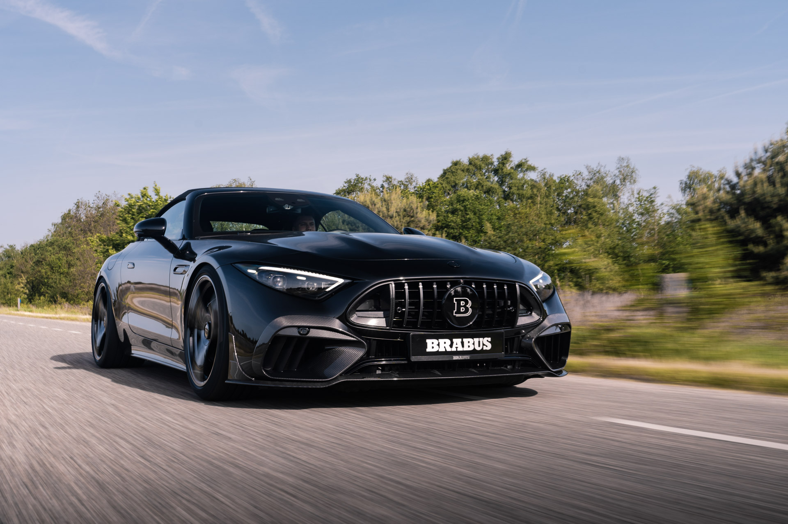

Introducere
Mașinile au reprezentat un punct central al revoluției industriale și sociale din secolul al XX-lea, schimbând modul în care oamenii călătoresc și interacționează cu lumea. De-a lungul decadelor, tehnologia auto a evoluat într-un ritm accelerat, de la primele automobile cu motoare cu aburi la vehiculele electrice și autovehiculele cu conducere autonomă de astăzi. Această evoluție a adus cu sine o serie de beneficii, precum mobilitate sporită, acces facil la locuri îndepărtate și îmbunătățiri semnificative în ceea ce privește siguranța și eficiența energetică.
Pe lângă aspectele practice, mașinile au devenit și un simbol al statutului social și al individualității. Opțiunile variate de modele, culori și caracteristici tehnologice permit proprietarilor să-și exprime personalitatea și preferințele într-un mod vizibil. Cu toate acestea, odată cu creșterea numărului de vehicule pe șosele, au apărut și provocări legate de trafic, poluare și impactul asupra mediului. Prin urmare, industria auto se confruntă cu provocarea de a dezvolta soluții sustenabile care să păstreze beneficiile mobilității, fără a compromite sănătatea planetei.
Viitorul mașinilor se conturează în direcția unei mobilități inteligente și sustenabile. Tehnologiile emergente, cum ar fi vehiculele electrice, conectivitatea avansată și sistemele de conducere autonomă, promit să redefinească complet experiența de conducere. Totodată, accentul pe dezvoltarea infrastructurii de încărcare, soluțiile de partajare a mașinilor și inovațiile în materie de design vor juca un rol crucial în modelarea viitorului industriei auto. Astfel, mașinile continuă să fie un domeniu dinamic, în evoluție constantă, cu implicații semnificative asupra societății și mediului înconjurător.
Cele mai populare Branduri
În lumea auto, există numeroase branduri care s-au bucurat de o popularitate remarcabilă de-a lungul anilor. Unele dintre cele mai prestigioase și apreciate mărci includ:

1 Toyota: Cunoscută pentru fiabilitatea și eficiența sa, Toyota este un lider global în industria auto. Mașinile sale sunt apreciate pentru tehnologia avansată și inovațiile în domeniul vehiculelor hibride.
2 Volkswagen: Brandul german Volkswagen este asociat cu designul rafinat, performanța solidă și o gamă variată de modele, de la mașini compacte la vehicule de lux.
3 Ford: O marcă iconică americană, Ford a jucat un rol semnificativ în istoria automobilelor, fiind recunoscută pentru camioanele și SUV-urile sale robuste, precum și pentru modelele clasice, cum ar fi Ford Mustang.
4 Mercedes-Benz: Ca reprezentant al luxului și eleganței, Mercedes-Benz este sinonim cu vehiculele premium. Modelele sale oferă performanțe excepționale, tehnologie de vârf și confort de înaltă calitate.
5 Honda: Cunoscută pentru fiabilitatea și inovația sa, Honda produce o gamă diversă de mașini, de la vehicule compacte și economice la motociclete și ATV-uri.
6 BMW: Alt brand german de prestigiu, BMW este recunoscut pentru designul său distinctiv și performanța sportivă. Vehiculele BMW sunt adesea asociate cu luxul și tehnologia avansată.
7 Chevrolet: Ca unul dintre brandurile emblemă ale industriei auto americane, Chevrolet oferă o gamă variată de vehicule, de la mașini compacte la camioane și SUV-uri, având în portofoliu modele precum Chevrolet Silverado și Chevrolet Camaro.
8 Nissan: Cu o prezență globală puternică, Nissan este cunoscut pentru gama sa diversă de mașini, inclusiv vehicule electrice, SUV-uri și modele sportive, precum Nissan GT-R.
Aceasta este doar o mică selecție, iar preferințele în materie de mărci de mașini pot varia în funcție de regiune, preferințe personale și trendurile de piață.
Istoria Autoturismelor
Istoria mașinilor este fascinantă și se întinde pe parcursul mai multor secole. Iată o privire succintă asupra evoluției mașinilor:
Secolul al XVII-lea și XVIII-lea: Primele concepte de mașini au apărut în secolul al XVII-lea, dar nu erau în totalitate similare cu mașinile moderne. Ingeniozitatea oamenilor s-a manifestat în invenții precum ceasurile cu apă, dispozitivele mecanice și alte experimente care au contribuit la dezvoltarea conceptului de mașină.
Secolul al XIX-lea: În secolul al XIX-lea, cu Revoluția Industrială, mașinile au început să se dezvolte rapid. Primul automobil cu abur a fost construit în 1769 de către Nicolas-Joseph Cugnot, dar a fost în secolul al XIX-lea când inventatorii precum Karl Benz și Gottlieb Daimler au produs primele automobile cu motoare cu ardere internă.
Automobilele cu ardere internă: În 1885, Karl Benz a construit Motorwagen, considerat primul automobil cu motor pe benzină. Acesta a marcat începutul erei automobilelor cu ardere internă. În 1889, Daimler a dezvoltat primul motor cu ardere internă, și astfel s-a pus baza pentru industria auto modernă.
Secolul al XX-lea: În prima jumătate a secolului al XX-lea, mașinile au devenit tot mai accesibile pentru publicul larg, iar modele precum Ford Model T au adus automobilele în casele multor oameni. În decursul acestui secol, tehnologia auto a continuat să evolueze, cu inovații precum frânele cu disc, transmisia automată, și sistemele de siguranță.
Perioada postbelică și globalizarea: După cel de-al Doilea Război Mondial, industria auto a cunoscut o expansiune semnificativă. Companii precum Toyota și Volkswagen au devenit importante, iar inovațiile tehnologice au inclus introducerea computerelor în mașini și dezvoltarea sistemelor avansate de siguranță.
Era modernă: În ultimele decenii, mașinile electrice și tehnologiile de conducere autonomă au devenit tot mai prominente. Companii precum Tesla au adus vehicule electrice pe piață, iar numeroase companii investesc în cercetare și dezvoltare pentru a aduce mașinile autonome pe șosele.
Așadar, istoria mașinilor reflectă nu doar progresul tehnologic, ci și influențele sociale, economice și culturale ale epocilor în care au fost create și adoptate. Industria auto continuă să evolueze în ritm accelerat, anticipând viitorul cu tehnologii precum vehiculele electrice, mașinile autonome și soluții de mobilitate inteligentă.